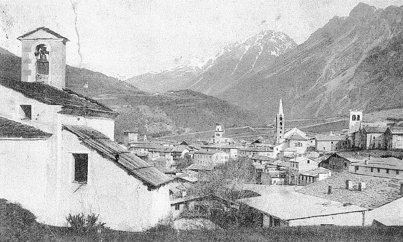
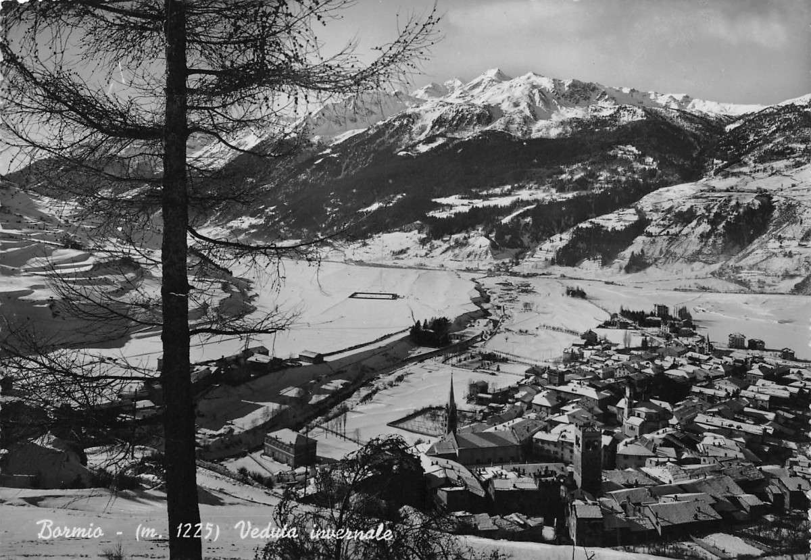

The Bormio region has an ancient and rich history as evidenced by the sporadic findings of prehistoric settlements, linked to groups of hunters who bivouacked during the summer season at high altitudes in the mountains. Even the Roman era left a trace of knowledge of the “Bormine” valleys, mostly regarding the thermal waters, already well known and famous for their therapeutic properties, as reported by Cassiodorus in 535-536 A.D.
We must wait until the beginning of the year 1.000 A.D. to retrace the history of Bormio, documented by abundant well-preserved archival sources. Thanks to the trade that took place tirelessly for the whole year along the Alpine passes, the town grew rich in goods, ideas and culture. Although subject to the bishop of Chur, Bormio soon succeeded in gaining political autonomy by installing an autonomous government which outlined the democratic life of the County even during periods of foreign influence. It was mainly the contact with the Dukes of Milan (1376-1509) that favoured the development of culture and art, as evidenced by the numerous works still visible in churches, palaces and paintings. After a short French settlement, from 1512 to 1797 the Swiss Grisons exerted their influence on the country allowing political autonomy and the maintenance of existing democratic statutes.
During the seventeenth century, like the rest of Europe, Bormio experienced difficulties related to the religious wars: looting, transiting of armies and plagues left heavy marks on the economic and social fabric of the County. In 1797 Bormio lost much of its autonomy and its history merged with that of the dawning Italian state. The First World War saw Bormio involved in the military hostilities: with a frontline of over 40 kilometers at an average altitude of 3000 m., the soldiers on both sides faced each other in a heroic alpine war, whose traces are still visible and preserved in the mountains.
The Development of tourism, which took place at the end of the Second World War, was favoured by a rich and extraordinary natural environment, the construction of the ski lifts and the development of thermal Spas. All these elements make Bormio and its valleys a magnificent tourist resort in the heart of the Alps .